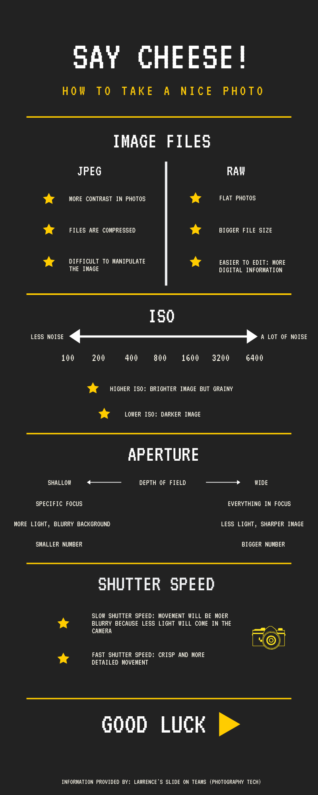

Web design
Learned how to change colours and edited the website to look more complete. Using the inspect element feature, I highlighted the word that I wanted to change the colour of font and searched for it on the agency CSS file. From there, I was able to change the header colour, font colour and a few other elements to the colour of my choice. After I had done that, I went and deleted any elements or words that I did not want on my website through Atom and then saving the changes I have made on GitHub and pushed it to origin so that it is live on the website. I will use these techniques to slowly amend any changes that I wish to make on my prototype website and design the website to my preference.
Photography
We learned about white balance and how to set up our white balance feature on the camera. If we are taking photos in a building, we should set our white balance to a certain setting to avoid the picture from being to orange or blue, depending on the source of light. We were also taught about how to manage the white balance in an outdoor setting. Similar to the indoor setting, we just have to see the lighting outside and work with that. We were then divided into our assigned groups for our assignment and go around campus and outside to test out the white balance setting. After that, in our assigned groups, we had to discuss our theme for our photography session and where do we plan to shoot. This is really helpful for my assignment because this will help me know how to adjust the white balance when taking the photos. If I do not set the white balance, the photos could end up being to saturated or blue. Controlling the white balance is an important feature to set especially when taking photos outdoor.
Code snippets and image files
Web design
Learned how to use the code snippet that was given by Christine to change the layout of the website. From the zipped file, we unzipped it and copied and pasted the file into Atom. After we had done that, we had to copy the whole layout that we had choose and pasted it into the desired page. This technique can be used when designing my website because I am able to change the layout of my website to look more interesting and more complete. The technique shown by Christine can also be implemented into my website to organise all my content.
Photography
We had to download photoshop onto the laptops that were assigned to us so that we can use the software to edit our photos. We were then shown a video about the difference between JPEG and Raw files. For JPEG we can see that it is smaller and more compressed file whereas Raw is a bigger file, so it takes up more space and takes longer to download. However, when working with Raw files we are able to manipulate the photo even more which means we can edit the photo more compared to JPEG. This can help me decide which file is better to use when taking photos for the portfolio.
Digital Wednesday
Web design
For digital Wednesday, we were asked to read up on more on HTML and CSS as well as how to deal with the files. This will be useful when designing the website so that I can understand the terms use in HTML and CSS. This will also make it easier for me to understand all the words on Atom.
Photography
No assigned task for digital Wednesday.
Photography skills 101
Web design
We were asked to do amend any details such as the layout, deleting any unwanted elements and changing the words on our prototype website. After doing that, we were asked to work on our design log as we are expected to publish the design log onto our website. By starting my design log, I will be able to be up to date with all the current things I am doing for my assignments and this will also help ensure that by the time I have to submit my assignments, I will be able to copy paste all the information on my design log onto my design log page on my website.
Photography
Today, we were asked to go out into town and start practicing some photography skills for our assignments. Before we left, Lawrence made us all sign a risk assessment and told us the rules when it comes to doing photographic work at location. Some rules that were mention was to not go alone and to always work in groups just in case something happens. This is beneficial for my assignment as I am able to practice on some basic photography skills out of campus. Features such as ISO, shutter speed, white balance and exposure plays a vital role especially when it comes to shooting outdoors. By being able to take some photographs outdoors, I was able to see and experiment with these features. This practice will be helpful for when I do my actual photography work for my assignment.

Changing images and taking photographs
Web design
We were taught how to change the image on our code snippet. To do this we had to go onto Source Unsplash and copy the link and paste it onto Atom at the desired page. This is helpful for my assignment because it can help me change the photos on my website to my desired one.
Photography
Uploaded the photos we took during yesterday’s on campus shoot onto Teams and discussed ways on how to improve the photos. This beneficial for my assignment because it can help me with my actual photographic work for the assignment. Once I know how to improve the photos, I will be able to take nicer shots.